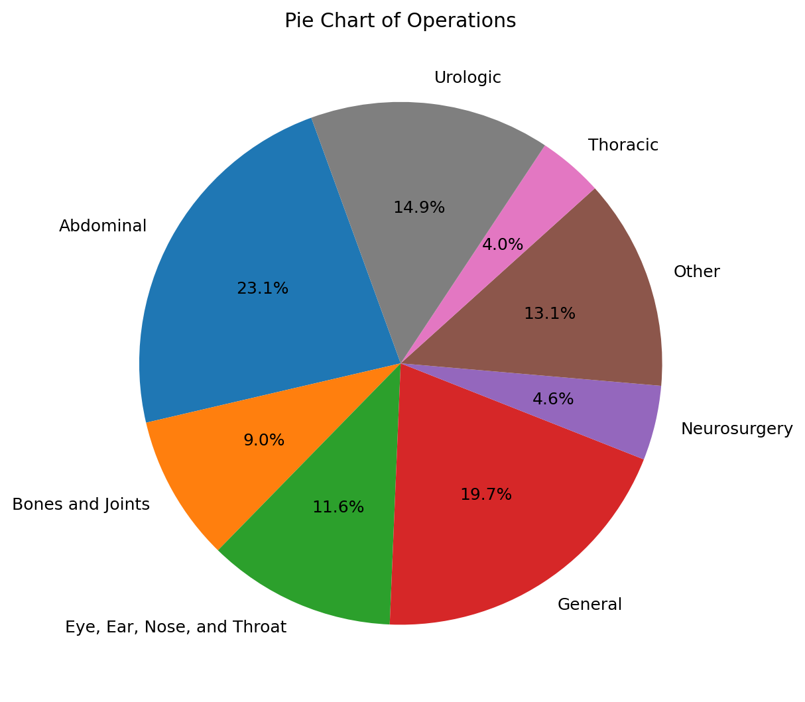
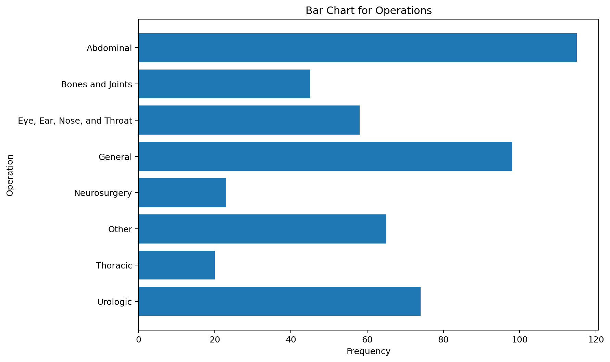
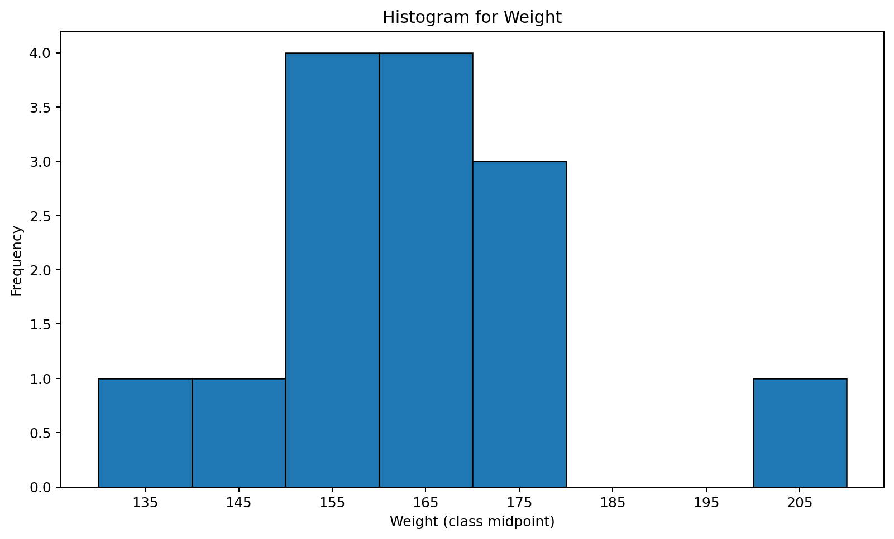
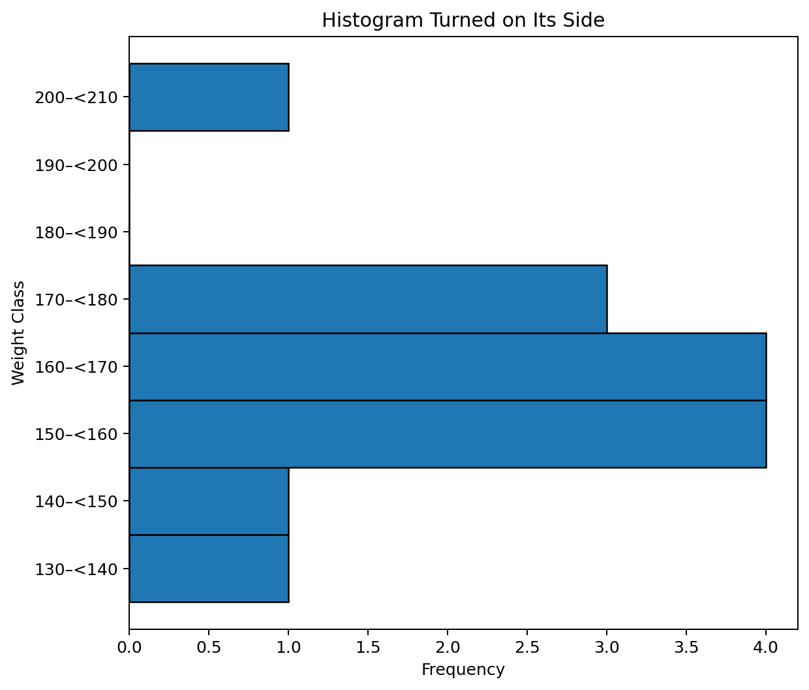
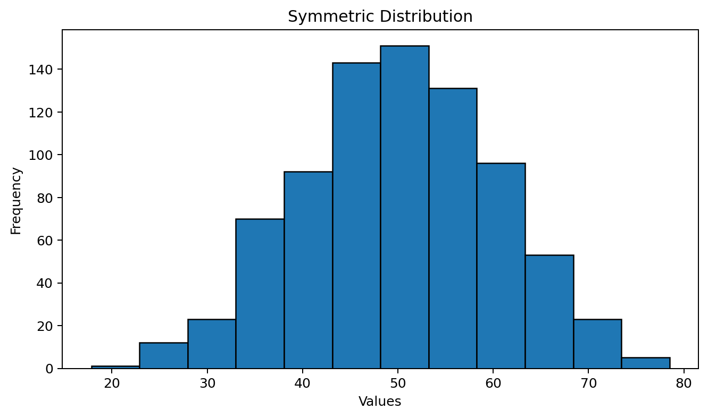
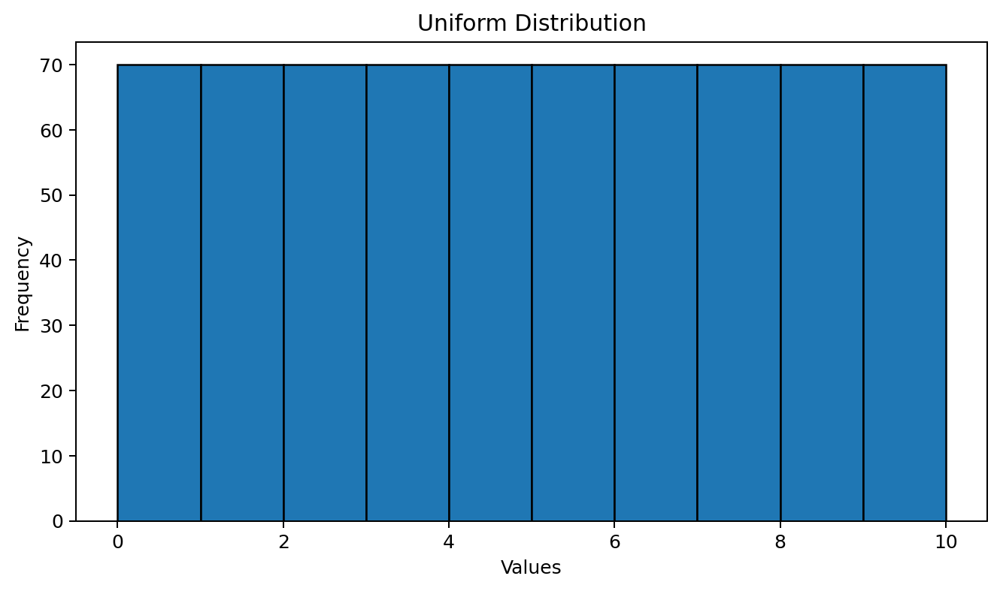
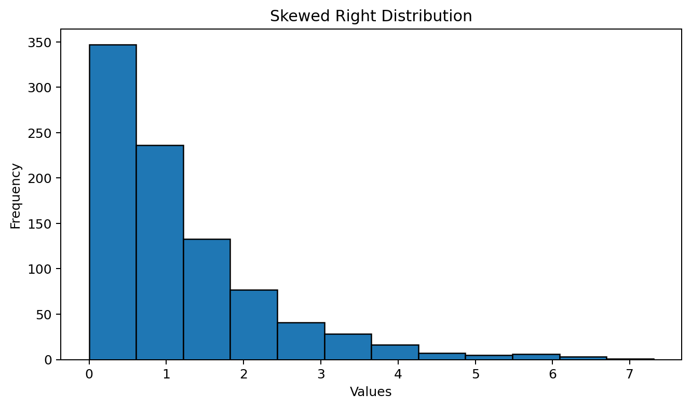
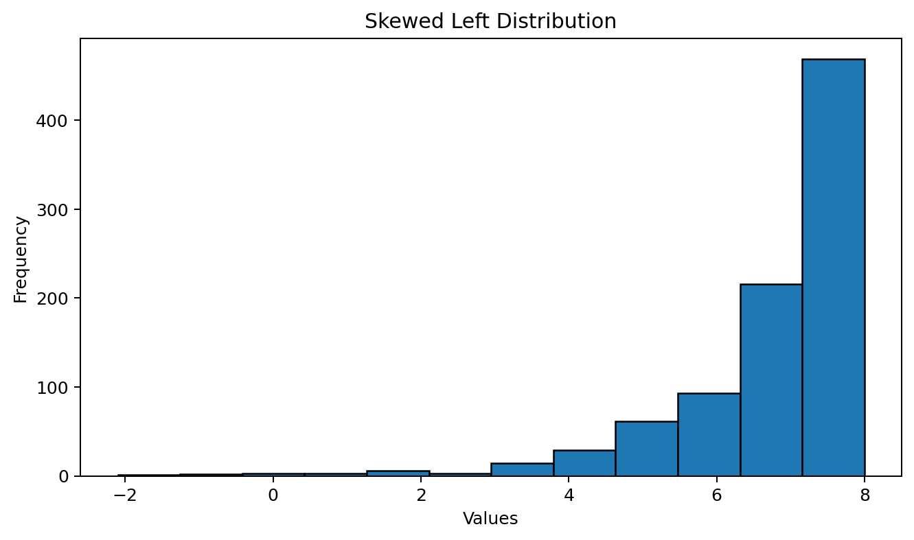
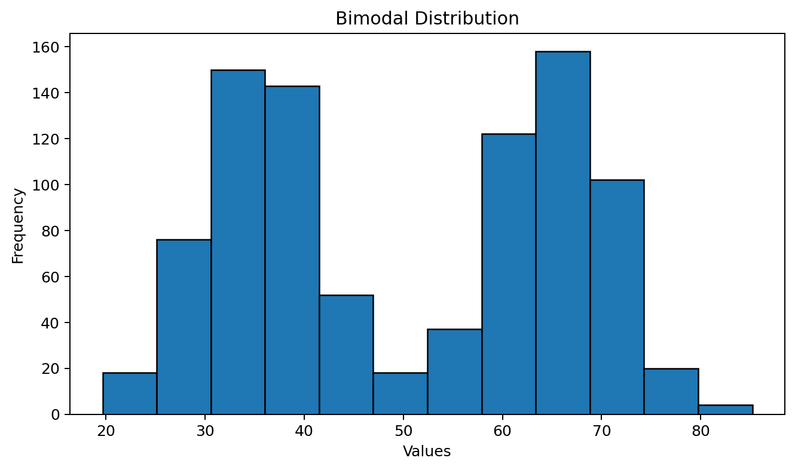

Example
Identify the extreme value in the following data:
14, 15, 17, 21, 60, 23, 25
Show Answer
The extreme value is 60.
Descriptive Statistics: Graphs and Tables for Univariate Data
We are now to the point in the class where we will begin looking at descriptive statistics. Remember that descriptive statistics are methods of summarizing a set of data. One way to do that is graphically. The main reason statisticians use graphs is to look at the distribution of data.
The type of graph used to describe data depends on the number of variables and the type of those variables. In this section we will only look at univariate data, which means we will graph one variable.
The following qualitative data set will be utilized in order to illustrate how some graphs work. The variable of interest in this illustration is type of operation. The data is nonnumerical and was collected for a one-year period from a single hospital.
Qualitative data is commonly summarized with either frequencies or percentages, which are both identified in the following table.
| Type of Operation | Frequency | Percentage |
|---|---|---|
| Abdominal | 115 | 23.1% |
| Bones and joints | 45 | 9.0% |
| Eye, ear, nose, and throat | 58 | 11.6% |
| General | 98 | 19.7% |
| Neurosurgery | 23 | 4.6% |
| Other | 65 | 13.1% |
| Thoracic | 20 | 4.0% |
| Urologic | 74 | 14.9% |
| Total | 498 | 100.0% |

We will use the same data set in order to discuss the properties of a bar graph. The bar graph is the most misused graph, in part because it is very easy to create.

The goal with these graphs is to look at the distribution for a single quantitative variable. When looking at the graphs presented, it is important to identify if there are extreme values in the data and the shape of the distribution.
Identify the extreme value in the following data:
14, 15, 17, 21, 60, 23, 25
The extreme value is 60.
The impact of an extreme value can be great. Suppose we want to estimate the average income for this class. If a billionaire was in the class, then their income would be an extreme value. That would make the average appear very high simply because of one observation.
14 male weights in pounds: 139, 153, 179, 201, 163, 168, 157, 170, 172, 165, 145, 155, 161, 151
In this case the first two digits of each number represent the stems and the last digit represents the leaves.
Notice in the stem-and-leaf plot it is easy to identify the one extreme value of 201. If a data point is separated from the rest of the data by at least one empty class (in this case two), then it is considered an extreme value.
The shape is identified by looking at the pattern created with the numbers. This will be discussed further later in this section.
In order to illustrate a frequency distribution, we will look at the same data presented above in the stem-and-leaf plot.
| Weight Class | Frequency |
|---|---|
| 130 but less than 140 | 1 |
| 140 but less than 150 | 1 |
| 150 but less than 160 | 4 |
| 160 but less than 170 | 4 |
| 170 but less than 180 | 3 |
| 180 but less than 190 | 0 |
| 190 but less than 200 | 0 |
| 200 but less than 210 | 1 |
| Total | 14 |
In the frequency distribution for weight, the same groupings were used as was naturally created with the stem-and-leaf plot. Notice with a big data set, the stem-and-leaf would become very messy, but the frequency distribution would simply have bigger frequencies. The downside is that the actual data values cannot be identified in the frequency distribution.

It is important to understand how the histogram was created based on the frequency distribution. It is also important to see how it is similar to the stem-and-leaf plot.





